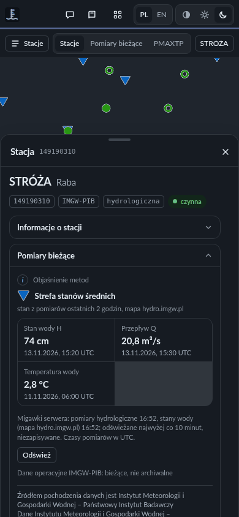
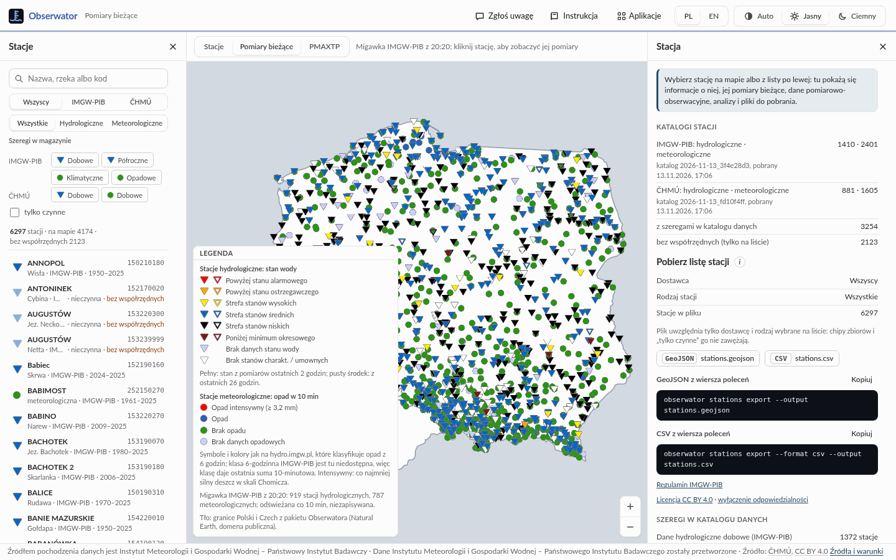
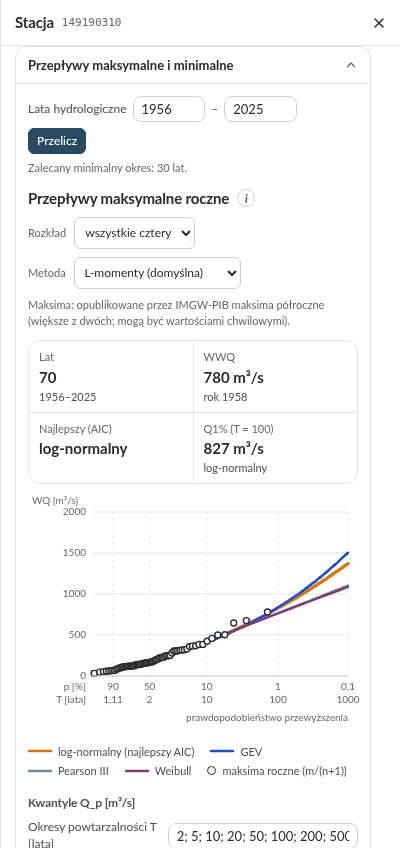
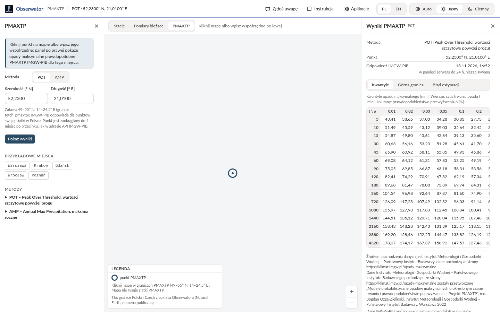
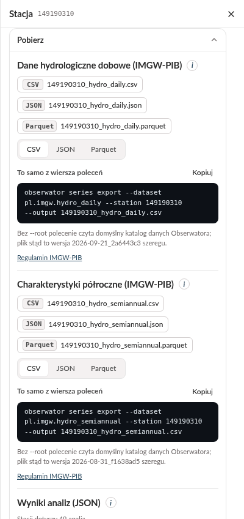

Przewodnik użytkownika
Obserwator w przeglądarce
Stany wody, przepływy, opady i temperatura z polskich i czeskich stacji pomiarowych w jednym miejscu: mapa stacji, wieloletnie szeregi pomiarów z wykresami i tabelami, ich analizy, pomiary bieżące i opady maksymalne PMAXTP.
To wersja rozwojowa: wygląd, funkcje i liczby mogą się jeszcze zmieniać.
Na start · bez szczegółów technicznych
Na start
Czym jest Obserwator?
Obserwator zbiera pomiary dwóch państwowych służb hydrologicznych i meteorologicznych: polskiego Instytutu Meteorologii i Gospodarki Wodnej – Państwowego Instytutu Badawczego (IMGW-PIB) i Czeskiego Instytutu Hydrometeorologicznego (ČHMÚ). Każda z nich publikuje dane po swojemu: w innych plikach, z innymi nazwami i oznaczeniami braków. Obserwator zapisuje je w jednym formacie, z tymi samymi nazwami zmiennych, jednostkami i oznaczeniami dni bez pomiaru, więc stację polską i czeską czyta się i porównuje tak samo.
Ta strona pokazuje w przeglądarce, co Obserwator ma w swoim katalogu danych:
- stacje z katalogów obu służb, na mapie i na liście, także te, które nie mają współrzędnych;
- szeregi pomiarów: wartości dobowe stanu wody, przepływu, temperatury wody, opadu, temperatury powietrza i pokrywy śnieżnej, a dla stacji wodowskazowych IMGW-PIB także jego charakterystyki miesięczne i półroczne, jako wykres, tabela i plik;
- analizy tych szeregów: stany i przepływy charakterystyczne, krzywą natężenia przepływu, przepływy maksymalne i minimalne, niżówki, reżim, opady, susze, temperaturę, pokrywę śnieżną i trendy. Liczy je Hydrolog, aplikacja ekosystemu Nogat do obliczeń hydrologicznych;
- pomiary bieżące stacji IMGW-PIB: ostatni stan wody, przepływ, opad i temperaturę;
- PMAXTP: tablice opadów maksymalnych o określonym czasie trwania i prawdopodobieństwie przewyższenia, opracowane przez IMGW-PIB, dla dowolnego punktu w Polsce.
Wystarczy przeglądarka na komputerze albo telefonie, bez logowania i bez instalowania programów. Strona tylko czyta dane i niczego w nich nie zmienia.
Czego się spodziewać, a czego nie
Obserwator da Ci
Wartości dobowe obu służb z oznaczeniem dni bez pomiaru, na wykresie i w tabeli, z wersją szeregu, z której pochodzą.
Wyniki Hydrologa z nazwą obliczenia i wersją programu, a przy każdej części objaśnienie : metoda, źródła i literatura.
CSV, JSON i Parquet z informacją o źródle danych i warunkach dostawcy, a obok każdego pliku polecenie, które zrobi ten sam plik poza przeglądarką.
Ostatnie pomiary stacji IMGW-PIB i tablice opadów maksymalnych dla wybranego punktu.
Obserwator nie jest
Nie udostępnia plików dostawców w postaci, w jakiej je pobrano, ani ich starszych wersji: to zadanie Archiwisty, innej aplikacji ekosystemu Nogat.
Nie przewiduje, czy rzeka wyleje, i nie ostrzega przed burzą. W sytuacji zagrożenia kieruj się komunikatami IMGW-PIB i służb.
Pomiary bieżące są tylko ze stacji IMGW-PIB; stacje czeskie mają wyłącznie szeregi dobowe z katalogu danych.
Pokazuje ich dane po przetworzeniu; analizy to obliczenia, a nie oficjalne opracowania tych instytucji. Własne obliczenia, np. wezbrania po ulewie, zrobisz w Hydrologu, któremu Obserwator przekazuje szeregi.
Pierwszy wynik w trzech krokach
- Znajdź stację
W panelu „Stacje” po lewej wpisz w wyszukiwarkę „Stróża”. Na liście będą dwie stacje o tej nazwie: wybierz hydrologiczną, na Rabie, o kodzie 149190310. Mapa przesunie się do niej, a po prawej otworzy się panel „Stacja”. Na telefonie listę otwiera przycisk „Stacje” nad mapą.
- Przeczytaj dane
Karta „Dane pomiarowo-obserwacyjne” jest już otwarta: wykres stanu wody H i wykres przepływu Q z całego okresu pomiarów. Przeciągnij myszą po wykresie, aby powiększyć kilka lat, a przycisk „Tabela” pokaże wartości dzień po dniu.
- Pobierz plik
Rozwiń kartę „Pobierz” na końcu panelu: przycisk CSV zapisze szereg w pliku, który otworzy arkusz kalkulacyjny, razem z informacją o źródle danych. Pod przyciskami jest polecenie, które zrobi ten sam plik w wierszu poleceń.
Ten sam widok otwiera odnośnik z kodem stacji i karty: dane pomiarowo-obserwacyjne Stróży. Adres strony zawsze opisuje to, co widać, więc można go zapisać albo wysłać (rozdział 01). Skróty, takie jak H, Q czy SNQ, wyjaśnia Słowniczek.
01 · Orientacja
Ekran i wspólne elementy
![Ekran Obserwatora z wybraną stacją Stróża na Rabie: u góry pasek z nazwą widoku i stacji, „Zgłoś uwagę”, „Instrukcja”, „Aplikacje”, przełącznikiem języka PL | EN i motywu; po lewej panel Stacje z wyszukiwaniem „Stróża”, filtrami i dwiema stacjami na liście; w środku mapa ze znakami stacji, legendą i pasek widoków Stacje, Pomiary bieżące, PMAXTP; po prawej panel Stacja z otwartą kartą Dane pomiarowo-obserwacyjne: wybór zbioru, zmiennych H, Q i T, rodzaju roku i lat oraz wykresy stanu wody i przepływu.](img/ekran.png)
- Górny pasek
- Znak Obserwatora (powrót do strony startowej), nazwa widoku i wybrana stacja z rzeką, a po prawej: „Zgłoś uwagę” (zgłoszenie błędu albo pomysłu, rozdział 07), „Instrukcja” (ten przewodnik w nowej karcie), „Aplikacje” (inne aplikacje ekosystemu Nogat, każda w swojej karcie; przycisk pojawia się, gdy serwer zna adres choć jednej z nich), przełącznik języka „PL | EN” i motyw: Auto (jak w systemie), Jasny albo Ciemny. Przeglądarka zapamiętuje język i motyw; motyw obowiązuje też w tym przewodniku, który jest tylko po polsku. Na węższym ekranie przyciski pokazują same ikony.
- Pasek nad mapą
- Przełącznik widoków: „Stacje” (stacje z katalogów, rozdział 02), „Pomiary bieżące” (ostatnie pomiary IMGW-PIB, rozdział 02) i „PMAXTP” (opady maksymalne, rozdział 04), obok podpowiedź, co można kliknąć. Gdy panel boczny jest zamknięty, na końcu paska stoi przycisk z jego nazwą, który go otwiera; na telefonie te przyciski są zawsze.
- Panel „Stacje”
- Po lewej: wyszukiwarka, filtry i lista stacji. W widoku „PMAXTP” w tym miejscu jest formularz punktu.
- Mapa
- Stacje w znakach mapy IMGW-PIB, przycisk „Legenda”, przyciski „Przybliż” i „Oddal”, a pod mapą pasek ze źródłami danych tego, co mapa pokazuje, i z informacją o podkładzie mapy.
- Panel „Stacja”
- Po prawej: wybrana stacja i jej karty (rozdział 03). Gdy żadna stacja nie jest wybrana, panel opisuje katalogi stacji, szeregi i zapisane analizy w katalogu danych, podaje wersję Obserwatora i Hydrologa i ma kartę „Pobierz listę stacji”. W widoku „PMAXTP” w tym miejscu są „Wyniki PMAXTP”.
Szerokość paneli
Przeciągnij krawędź między panelem a mapą, aby poszerzyć albo zwęzić panel. Z klawiatury: przejdź do krawędzi klawiszem Tab i użyj strzałek (16 px, z Shift 64 px), Home (najwęższy) i End (najszerszy); Enter albo dwuklik przywraca szerokość domyślną. Panel „Stacje” ma od 260 do 560 px, panel „Stacja” od 340 do 720 px, a mapie zostaje co najmniej 480 px. Przeglądarka zapamiętuje szerokości. w nagłówku zamyka panel, a przycisk z jego nazwą na pasku nad mapą otwiera go z powrotem.
Telefon i wąski ekran
Do szerokości 860 px panele wysuwają się od dołu jako arkusze, jeden naraz: listę otwiera przycisk „Stacje” po lewej stronie paska nad mapą, a panel stacji przycisk po prawej, z nazwą wybranej stacji. Wybór stacji z listy albo z mapy od razu pokazuje jej arkusz. Arkusz zamyka , klawisz Esc albo dotknięcie uchwytu u góry arkusza.


Adres strony zapamiętuje widok
Adres w pasku przeglądarki zmienia się razem z widokiem: ?station=149190310 to wybrana stacja, §ion=dane ostatnio otwarta karta, ?view=current widok „Pomiary bieżące”, a ?view=pmaxtp&lat=…&lon=… punkt PMAXTP (z &method=AMP dla metody AMP). Taki adres można zapisać w zakładkach albo wysłać: otworzy ten sam widok, a na telefonie od razu arkusz stacji albo wyników PMAXTP. Odnośnik z kartą otwiera tylko tę kartę i przewija do niej panel; bez karty otwierają się „Pomiary bieżące” i „Dane pomiarowo-obserwacyjne”.
| Odnośnik | Co otwiera |
|---|---|
?station=149190310§ion=stacja | „Informacje o stacji” Stróży na Rabie |
?station=149190310§ion=teraz | jej „Pomiary bieżące” |
?station=149190310§ion=pobierz | jej pliki w karcie „Pobierz” |
?view=current | mapę „Pomiary bieżące” |
?view=pmaxtp&lat=52.2300&lon=21.0100 | PMAXTP dla punktu w Warszawie, metoda POT |
02 · Widoki „Stacje” i „Pomiary bieżące”
Mapa i lista stacji
Widok „Stacje” pokazuje wszystkie stacje bieżących katalogów IMGW-PIB i ČHMÚ: hydrologiczne (wodowskazowe) i meteorologiczne. Mapa i lista pokazują te same stacje, wybrane tymi samymi filtrami.
Znaki stacji
Stacje wyglądają jak na mapie hydro.imgw.pl, serwisu hydrologicznego IMGW-PIB, więc kto zna tamtą mapę, odczyta tę od razu:
- trójkąt: stacja hydrologiczna;
- koło: stacja meteorologiczna;
- pusty środek: stacja „tylko w katalogu”, bez szeregów w katalogu danych;
- obrys przerywany: stacja ČHMÚ;
- znak blady: stacja nieczynna;
- znak większy: stacja wybrana.
Na mapie nie ma podpisów: po najechaniu na znak podpowiedź pokazuje nazwę, rzekę, kod, dostawcę i rodzaj stacji oraz lata jej szeregów albo „tylko w katalogu”, a kliknięcie wybiera stację. Legenda w rogu mapy przypomina znaczenie znaków; przycisk „Legenda” zwija ją i rozwija, a na telefonie jest na początku zwinięta.
Lista, wyszukiwarka i filtry
- Wyszukiwarka („Nazwa, rzeka albo kod”) szuka fragmentu nazwy albo rzeki i początku kodu, bez względu na wielkość liter i znaki diakrytyczne: „lodz” znajdzie Łódź, a „spindleruv” Špindlerův Mlýn. Zawęża tylko listę, nie mapę.
- Filtry: „Dostawca” (Wszyscy, IMGW-PIB, ČHMÚ), „Rodzaj stacji” (Wszystkie, Hydrologiczne, Meteorologiczne), „Szeregi w katalogu danych” i „tylko czynne”. Chipy „Szeregi w katalogu danych” to zbiory danych każdego dostawcy, np. „Dobowe” czy „Opadowe”; pełną nazwę zbioru pokazuje podpowiedź. Wybrany chip zostawia stacje, które mają szereg tego zbioru; kilka chipów zostawia stacje z którymkolwiek z nich. Filtry zawężają i listę, i mapę.
- Liczby nad listą mówią, ile stacji pasuje, ile z nich jest na mapie, a ile nie ma współrzędnych, np. „6297 stacji · na mapie 4174 · bez współrzędnych 2123”. Gdy nic nie pasuje, „Wyczyść filtry” wraca do wszystkich stacji.
- Stacje bez współrzędnych są tylko na liście, z dopiskiem „bez współrzędnych”. Ich dane i analizy otwierają się tak samo, tylko mapa nie ma ich gdzie pokazać; przyczynę braku położenia podaje karta „Informacje o stacji”.
- Kolejność: najpierw stacje z szeregami, potem pozostałe. Lista pokazuje po 150 stacji, a „Pokaż kolejne” dokłada następne. Kliknięcie stacji wybiera ją, a mapa przesuwa się do niej, jeśli stacja ma współrzędne.
Pomiary bieżące
Widok „Pomiary bieżące” pokazuje tylko stacje IMGW-PIB z ostatnimi pomiarami z jego publicznego API: znaki katalogu znikają, a wracają po wybraniu „Stacje”. Stacji ČHMÚ w tym widoku nie ma, bo Obserwator nie obsługuje bieżących danych ČHMÚ.


Stacja hydrologiczna ma kolor stanu wody względem stanów charakterystycznych, jak na mapie hydro.imgw.pl:
- czerwony: „Powyżej stanu alarmowego”;
- pomarańczowy: „Powyżej stanu ostrzegawczego”;
- żółty: „Strefa stanów wysokich”;
- niebieski: „Strefa stanów średnich”;
- czarny: „Strefa stanów niskich”;
- bordowy: „Poniżej minimum okresowego”;
- jasnofioletowy: „Brak danych stanu wody”;
- biały: „Brak stanów charakt. / umownych” (stacja nie ma stanów charakterystycznych, z którymi można porównać pomiar).
Znak pełny to stan z pomiarów ostatnich 2 godzin, a z pustym środkiem stan z ostatnich 26 godzin.
Stacja meteorologiczna ma kolor klasy opadu:
- czerwony: „Opad intensywny”, co najmniej silny deszcz w skali Chomicza, czyli ≥ 3,2 mm w 10 minut;
- niebieski: „Opad”;
- zielony: „Brak opadu”;
- jasnofioletowy: „Brak danych opadowych”.
Mapa hydro.imgw.pl klasyfikuje opad z 6 godzin. Klasa 6-godzinna IMGW-PIB jest tu niedostępna, więc klasę daje ostatnia suma 10-minutowa, z tą samą granicą opadu intensywnego przeliczoną na 10 minut (√10 ≈ 3,2 mm).
Po najechaniu na znak podpowiedź pokazuje wartości z czasem pomiaru: stan wody H, przepływ Q i temperaturę wody, a dla stacji meteorologicznej opad w 10 min, temperaturę powietrza, średni wiatr i wilgotność względną. Kliknięcie wybiera stację; jej karta „Pomiary bieżące” pokazuje te same wartości (rozdział 03).
Serwer Obserwatora pyta IMGW-PIB najwyżej raz na 10 minut i trzyma odpowiedź, czyli migawkę, tylko w pamięci: niczego nie zapisuje. Otwarty widok odświeża się co 10 minut. Pasek nad mapą podaje czas migawki („Migawka IMGW-PIB z 14:20”) według zegara Twojego komputera, a legenda liczbę stacji. Czasy pomiarów są w UTC, tak jak podaje je IMGW-PIB. Gdy IMGW-PIB nie odpowiada, widok pokazuje ostatnią udaną migawkę. To dane operacyjne: bieżące, niesprawdzone, nie archiwalne.
Podkład mapy
Mapa ma szary podkład z nazwami miejscowości po polsku; domyślnie to OpenFreeMap z danymi OpenStreetMap, a serwer może mieć inny. Jego źródło podaje pasek pod mapą, np. „Podkład mapy: OpenFreeMap © OpenMapTiles Data from OpenStreetMap”. Kafelki podkładu Twoja przeglądarka pobiera wprost z serwera jego dostawcy. Gdy serwer nie ma podkładu albo jego kafelki się nie wczytają, tłem są granice Polski i Czech z pakietu Obserwatora (Natural Earth, domena publiczna), o czym mówi legenda.
03 · Panel „Stacja”
Stacja: dane i analizy
Wybrana stacja otwiera się w panelu „Stacja” po prawej (na telefonie w arkuszu). U góry są nazwa i rzeka, a pod nimi kod, dostawca (pełną nazwę pokazuje podpowiedź), rodzaj, plakietka „czynna” albo „nieczynna” i ewentualnie „bez współrzędnych”. Pod spodem karty w stałej kolejności: kartę rozwija i zwija kliknięcie nagłówka, a otwartych może być kilka naraz. Pod każdą otwartą kartą są wiersze dostawcy danych, których wymaga (rozdział 06).
Karty każdej stacji
| Karta | Adres | Co pokazuje |
|---|---|---|
| „Informacje o stacji” | stacja | „Dane katalogowe”: kod, nazwa, rzeka, dostawca, rodzaj, typ stacji meteorologicznej IMGW-PIB (stacja klimatologiczna albo posterunek opadowy), czy czynna, położenie w WGS84 ze źródłem i niepewnością albo z przyczyną braku, wysokość, zero wodowskazu, kilometr rzeki, kod hydrograficzny i rok założenia, jeśli katalog je ma. Stacja hydrologiczna ČHMÚ ma „Progi ČHMÚ” (stopnie aktywności powodziowej SPA 1–3, próg suszy i q50). „Szeregi w katalogu danych”: dla każdego zbioru i zmiennej pierwszy i ostatni dzień, liczba okresów z wartością, sum z kilku dni i luk. |
| „Pomiary bieżące” | teraz | Ostatnie wartości stacji IMGW-PIB z migawki serwera. Stacja hydrologiczna: stan wody H, przepływ Q i temperatura wody z czasem pomiaru (UTC) oraz stan wody w znaku i kolorze mapy hydro.imgw.pl. Stacja meteorologiczna: opad z 10 minut z klasą, temperatura powietrza, średni wiatr i wilgotność; stacja synoptyczna dodaje ostatnią depeszę SYNOP. „Odśwież” pyta serwer ponownie. Stacja ČHMÚ: „Dane bieżące ČHMÚ nie są udostępniane”. |
| „Dane pomiarowo-obserwacyjne” | dane | Szeregi z katalogu danych: wykres i tabela (niżej). |
| karty analiz | niżej | Analizy stacji hydrologicznej albo meteorologicznej; tylko te, na które pozwalają jej dane. |
| „Pobierz” | pobierz | Pliki szeregów, zapisane wyniki analiz w JSON i CSV oraz przekazanie do Hydrologa (rozdział 05). |
„Dane pomiarowo-obserwacyjne”
- Zbiór danych: gdy stacja ma kilka zbiorów, przełącznik u góry wybiera jeden, np. „Dobowe” albo „Półroczne” IMGW-PIB; pod nim stoi pełna nazwa zbioru.
- Zmienne: przyciski zmiennych z jednostkami (np. H cm, Q m³/s, T °C, P mm) włączają je na wykresie; nazwę zmiennej pokazuje podpowiedź. Na początku widać stan wody i przepływ albo średnią temperaturę i opad. Każda jednostka ma osobny wykres.
- „Rodzaj roku”: rok hydrologiczny albo kalendarzowy. Rok hydrologiczny trwa od 1 listopada do 31 października i nosi numer roku, w którym się kończy. IMGW-PIB publikuje dane hydrologiczne w latach hydrologicznych, a dane meteorologiczne, tak jak ČHMÚ, w latach kalendarzowych; przełącznik zmienia tylko podział na lata wykresu i tabeli.
- „Lata” od–do z przyciskiem „Przelicz” zawężają wykres i tabelę, a „Cały okres” wraca do całości.
- Wykres: dzień bez wartości przerywa linię, a opad zebrany z kilku dni i podany w ostatnim z nich zaznaczają kreski pod wykresem. Nawet bardzo długi szereg rysuje się od razu, bo wykres pokazuje najmniejszą i największą wartość każdej kolumny pikseli; tabela i pliki mają każdą wartość.
- „Tabela” pokazuje wartości dzień po dniu, od najnowszych, po 50 wierszy („‹ Nowsze”, „Starsze ›”, a « i » przeskakują na początek i koniec). Obok wartości stoi jej flaga, gdy inna niż zwykła wartość: „brak” (dzień bez wartości), „brak zjawiska” (zjawisko nie wystąpiło, w szeregu 0) albo „suma z kilku dni”.
- Charakterystyki miesięczne i półroczne IMGW-PIB rysują się jako pas od najniższej do najwyższej wartości z linią średniej; półrocza mają przełącznik rok, zima (XI–IV), lato (V–X) i daty ekstremów w tabeli.
- Pod wykresem: jednostki, definicja roku i wersja szeregu w katalogu danych, np.
szereg 2026-09-21_95988ba3.
Analizy: wynik zapisany i liczony na żądanie
Każdą liczbę analiz policzył Hydrolog z szeregu stacji w katalogu danych: polecenie obserwator analyses build zapisuje tam wyniki wszystkich analiz każdej stacji z całego jej zapisu, a strona je pokazuje. Karta analizy otwiera się z zapisanymi wynikami; Hydrolog liczy na żądanie dopiero wtedy, gdy zmienisz opcję. Stacja bez zapisanych analiz nie ma kart analiz, a panel mówi o tym notką. Karta analizy składa się z części z tytułem; przycisk („Objaśnienie”) przy tytule rozwija opis: co to jest, metoda, źródło danych i literatura. Pod każdą częścią są plakietki pochodzenia:
- „Hydrolog wersja · obliczenie · wynik zapisany data”: wynik policzony wcześniej z domyślnymi opcjami i przechowywany w katalogu danych; tak otwiera się każda karta;
- „Hydrolog wersja · obliczenie · policzony na żądanie”: wynik, który serwer policzył przed chwilą, bo wybrałeś inne lata albo opcje. Hydrolog liczy na serwerze, zwykle kilka sekund („Liczę…”); wynik zostaje tylko w pamięci serwera i nie jest nigdzie zapisywany. Serwer bez programu Hydrologa pokazuje tylko wyniki zapisane: zmiana opcji kończy się wtedy komunikatem o braku programu, a paski klimatyczne, których środek Hydrolog liczy na żądanie, nie są rysowane;
- „szereg wersja”: wersja szeregu, z którego liczono, nazwana tak samo jak pod wykresem „Dane”; jej podpowiedź pokazuje katalog tej wersji w katalogu danych. Podpowiedź plakietki Hydrologa pokazuje opcje obliczenia. Gdy jeden z wyników części się nie powiódł, nad pozostałymi stoi komunikat Hydrologa albo serwera, np. o przekroczeniu 30 s.
Okres. Zapisany wynik obejmuje cały zapis stacji; wyjątkiem jest krzywa natężenia przepływu, liczona z ostatnich 10 lat, bo krzywa zmienia się w czasie. Pola „Lata” od–do z przyciskiem „Przelicz” wybierają inny okres, który Hydrolog liczy na żądanie. Obok stoi „Zalecany minimalny okres: 30 lat.”, a krótszy okres jest oznaczony: „wyniki są mniej pewne”. Uwagi Hydrologa, np. o latach pominiętych z powodu braków, stoją przy wyniku.
Analizy stacji hydrologicznej
| Karta i adres | Co pokazuje | Metoda i źródło |
|---|---|---|
„Stany charakterystyczne” characteristic | Wartości II stopnia (WWQ…NNQ, WWW…NNW) z wybranych lat; wartości I stopnia (NW, SW, WW; NQ, SQ, WQ; NT, ST, WT) w latach, z wykresem; „Progi i dni poza nimi”: progi ČHMÚ (SPA 1–3, Q50, susza) oraz SWW, SSW, SNW (SWQ, SSQ, SNQ) na wykresie dobowym, dni poza progiem w latach i ciągi takich dni. | Hydrolog „stats characteristic” według metodyki IMGW-PIB, z szeregu dobowego (pogrubione) i z charakterystyk półrocznych IMGW-PIB (mniejsze); dni poza progiem: „stats threshold-events”. Stanów ostrzegawczych i alarmowych IMGW-PIB nie ma w danych archiwalnych, więc ich tu nie ma. |
„Krzywa natężenia przepływu” rating | Pary H–Q z tego samego dnia i krzywa Q = a·(H − H₀)^b wybranych lat, z możliwością odrzucenia par odstających (2σ) i z osią Q liniową albo logarytmiczną; „Kolejne okresy”: krzywe kolejnych okresów całego zapisu. | Hydrolog „hydrometrics rating-curve”, nieliniowa metoda najmniejszych kwadratów. Pary dobowe to nie pomiary hydrometryczne: przepływy wyznaczyła służba z krzywej, więc rozrzut punktów i przesuwanie się krzywych pokazują zmiany krzywej w czasie. |
„Przepływy maksymalne i minimalne” extremes | Kwantyle przepływów maksymalnych rocznych Qp z wykresem na siatce prawdopodobieństwa, z wyborem rozkładu i metody; jednorodność maksimów; przepływy minimalne NQT. | Hydrolog „stats flood-frequency”: rozkłady log-normalny, GEV, Pearsona III i Weibulla, domyślnie L-momenty (Hosking i Wallis 1997), miary zgodności KS, A² i AIC; maksima z charakterystyk półrocznych IMGW-PIB, gdzie są, inaczej z pełnych lat hydrologicznych szeregu dobowego. „stats homogeneity” (testy Manna–Whitneya U, Kołmogorowa–Smirnowa i Pettitta, α = 0,05); „stats low-flow” (rozkład Fishera–Tippetta minimów). |
„Niżówki” lowflow | Okresy z przepływem poniżej progu w latach: liczba, czas trwania, niedobór w mln m³, najdłuższa niżówka i wykres wybranego roku; próg (SNQ, Q70, Q90 albo podany) i najkrótszy czas trwania do wyboru. | Hydrolog „stats low-flow-sequences”, metoda progowa (Tallaksen i van Lanen 2004): domyślnie co najmniej 5 dni, ciągi rozdzielone przerwą krótszą niż 4 dni łączone w jedną niżówkę. |
„Czas trwania i strefy” duration | Krzywe czasu trwania stanów i przepływów, wartości o danym czasie trwania, częstość klas z klasą najczęstszą i liczebności klas w miesiącach; strefy stanów wody Rybczyńskiego (NTW, STW, WTW). | Hydrolog „stats duration-curve” (pozycje Weibulla m/(n+1); klasy stanów co 10 cm, przepływów 40 klas logarytmicznych) i „hydrometrics water-level-zones”. |
„Reżim i sezonowość” regime | Reżim dobowy i statystyki miesięczne z całego zapisu; współczynniki Pardégo i typ reżimu; terminy rocznych maksimów i minimów na wykresie kołowym roku. | Hydrolog „stats daily”, „stats monthly”, „stats regime” (Pardé 1933; typ wg Dynowskiej 1997 według kryteriów Wrzesińskiego 2018; wskaźnik sezonowości Walsha i Lawlera 1981) i „stats seasonality” (Bayliss i Jones 1993, Burn 1997). |
„Temperatura wody” temperature | Cykl roczny temperatury wody i jego dwie harmoniki (amplituda, termin maksimum), średnia i amplituda w latach, dni z temperaturą co najmniej 15, 20, 25 °C i poniżej 1 °C. | Hydrolog „stats harmonics” (analiza harmoniczna metodą najmniejszych kwadratów, Wilks 2011), „stats threshold-events” i „stats characteristic”. |
„Trendy i bilans” trends | Trendy rocznych maksimów, średnich i minimów z nachyleniem Sena na 10 lat; objętość odpływu w latach i miesiącach z krzywą sumową; przepływ podziemny i wskaźnik BFI. | Hydrolog „stats mann-kendall” (Kendall 1975, Sen 1968, Gilbert 1987), „stats runoff-volume” i „stats baseflow” (filtr Lyne’a i Hollicka 1979, α = 0,925, trzy przejścia). |


Analizy stacji meteorologicznej
| Karta i adres | Co pokazuje | Metoda i źródło |
|---|---|---|
„Opady” opady | Sumy miesięczne, sezonowe i roczne z normalną i opadem względnym; reżim i sezonowość opadów; dni z opadem ≥ 0,1, 1, 10 i 20 mm i natężenie dnia mokrego; opady duże R95p i R99p; opady maksymalne 1–10 dni; opad maksymalny o prawdopodobieństwie p obok PMAXTP dla punktu stacji. | Hydrolog „meteo precipitation” (wskaźniki ETCCDI, WMO-No. 1203) i „stats flood-frequency” na maksimach rocznych; PMAXTP pobrane z IMGW-PIB (rozdział 04). |
„Susze i okresy bezopadowe” susze | Okresy bezopadowe i opadowe z progiem do wyboru; wskaźnik SPI dla 1, 3, 6 i 12 miesięcy z klasami McKee; opad względny i jego klasy. | Hydrolog „meteo spells” (CDD i CWD wg ETCCDI) i „meteo spi” (McKee i in. 1993, WMO-No. 1090; klasy lat wg Kaczorowskiej 1962). |
„Temperatura” temperatura | Średnie, ekstrema i normalna z anomalią średniej rocznej; paski klimatyczne; dni charakterystyczne (z przymrozkiem, mroźne, gorące, upalne, noce tropikalne) i stopniodni; cykl roczny i harmoniki; współczynnik hydrotermiczny. | Hydrolog „meteo temperature”, „stats harmonics” i „meteo hydrothermal” (WMO-No. 1203, ETCCDI; Sielianinow, klasy Skowery i Puły 2004). Paski klimatyczne rysuje metoda Eda Hawkinsa (#ShowYourStripes); ich skala kolorów to prototyp tego serwera, dopóki nie przejmie jej Hydrolog. |
„Śnieg” snieg | Dni z pokrywą śnieżną i jej największa grubość w sezonach zimowych (od 1 VIII do 31 VII), pierwszy i ostatni dzień z pokrywą, śnieg świeży na stacjach opadowych. | Hydrolog „meteo snow” (WMO-No. 1203). |
„Trendy” trendy | Test Manna–Kendalla i nachylenie Sena serii rocznych: suma roczna opadu, maksymalny opad dobowy, dni z opadem ≥ 10 mm, najdłuższy okres bezopadowy, średnia roczna temperatura, dni z przymrozkiem i dni gorące. | Hydrolog „stats mann-kendall” (Kendall 1975, Sen 1968, Gilbert 1987, Conover 1980). |
Posterunek opadowy IMGW-PIB nie mierzy temperatury, więc nie ma karty „Temperatura”, a stacja ČHMÚ nie ma karty „Śnieg”. Karty opadów i temperatury mają „Okres odniesienia” normalnej (domyślnie cały zapis stacji; WMO zaleca co najmniej 30 lat) i „Rodzaj roku”: kalendarzowy albo hydrologiczny XI–X.
Wykresy
- Odczyt: najedź kursorem na wykres, a linia odczytu pokaże datę i wartości. Z klawiatury: przejdź do wykresu klawiszem Tab i przesuwaj odczyt strzałkami w lewo i w prawo; Shift albo Page Up i Page Down przesuwają o dziesięć kroków, Home i End na początek i koniec, a Esc ukrywa odczyt.
- Powiększenie (wykresy w czasie i część pozostałych): przeciągnij myszą po wykresie, aby pokazać zakres; + i − przybliżają i oddalają, a 0, dwuklik albo przycisk „Pokaż całość” pod wykresem wracają do całości. Napis „Widoczne: od – do” mówi, co widać.
- Wykresy prawdopodobieństwa, np. przepływów maksymalnych, mają oś prawdopodobieństwa przewyższenia p [%] i okresu powtarzalności T [lata], a odczyt „p = … % · T = … lat”.
- Obraz: jako obraz zapisują się paski klimatyczne: PNG i SVG z nazwą stacji, okresem, autorem metody i wierszami dostawcy, a do tego CSV z latami, średnimi i anomaliami. Pozostałe wykresy zapiszesz zrzutem ekranu; ich liczby są w tabelach kart i w plikach „Wyniki analiz (JSON, CSV)”.
04 · Widok „PMAXTP”
PMAXTP: opady maksymalne
PMAXTP to opracowanie IMGW-PIB: ile milimetrów deszczu może spaść w czasie t, od 5 minut do 72 godzin, z prawdopodobieństwem przewyższenia p, np. 1 % to opad, który zdarza się średnio raz na 100 lat. IMGW-PIB policzył je w siatce punktów w całej Polsce dwiema metodami:
- POT (Peak Over Threshold, wartości szczytowe powyżej progu)
- Wszystkie zdarzenia opadowe przekraczające próg, niezależnie od roku wystąpienia. Metoda zalecana do analiz częstości zdarzeń ekstremalnych i domyślna na tej stronie.
- AMP (Annual Max Precipitation, maksima roczne)
- Tylko największy opad każdego roku serii pomiarowej; stosowana w tradycyjnych analizach hydrologicznych.


- Punkt: kliknij mapę albo wpisz w panelu po lewej „Szerokość [° N]” i „Długość [° E]” w stopniach dziesiętnych (przecinek albo kropka) i naciśnij „Pokaż wyniki”. „Przykładowe miejsca” (Warszawa, Kraków, Gdańsk, Wrocław, Poznań) wybierają punkt jednym kliknięciem. Zakres to 49–55° N i 14–24,5° E, a IMGW-PIB odpowiada dla punktów swojej siatki w Polsce. Punkt jest zaokrąglany do 4 miejsc po przecinku, jak w adresie API IMGW-PIB. Mapa pokazuje tylko wybrany punkt, bez siatki PMAXTP.
- Metoda: przełącznik POT | AMP nad współrzędnymi; „Metody” na dole panelu opisują obie.
- Tabele w panelu „Wyniki PMAXTP”: „Kwantyle” opadu maksymalnego, „Górna granica” przedziału ufności kwantyli i „Błąd estymacji” kwantyli, wszystkie w mm. Wiersze to czas trwania opadu t [min], kolumny prawdopodobieństwo przewyższenia p [%]: 16 czasów trwania i 27 prawdopodobieństw, od 0,01 do 99,9 %.
- Pod tabelą: wiersze źródła danych PMAXTP i warunki IMGW-PIB, odnośnik do monografii projektu PMAXTP (PDF w serwisie IMGW-PIB), pliki CSV i JSON (rozdział 05), odnośnik „Odpowiedź API IMGW-PIB (JSON)”, czyli ten punkt wprost z serwisu IMGW-PIB, i polecenie
obserwator pmaxtp fetch, które pobiera te same liczby w wierszu poleceń. IMGW-PIB nie publikuje plików PMAXTP pod adresem punktu: jego strona klimat.imgw.pl/opady-maksymalne składa pliki w przeglądarce z tej samej odpowiedzi. - „Odpowiedź IMGW-PIB” podaje czas pobrania. Serwer pyta IMGW-PIB o jeden punkt naraz i trzyma odpowiedź w pamięci do 24 godzin, bez zapisywania: ten sam punkt otwiera się wtedy od razu.
Przykład: PMAXTP dla punktu 52,2300° N, 21,0100° E (Warszawa, metoda POT).
05 · Dane poza przeglądarką
Pobieranie i formaty
Każdy plik ma w sobie informację o źródle danych i warunkach dostawcy (rozdział 06), a obok przycisków stoi polecenie, które robi ten sam plik w wierszu poleceń.


Szeregi stacji: karta „Pobierz”
Dla każdego zbioru danych stacji są trzy przyciski, CSV, JSON i Parquet, z nazwą pliku <kod>_<zbiór>.<format>, np. 149190310_hydro_daily.csv. Plik ma bieżącą wersję szeregu z katalogu danych serwera, z całego okresu. Pod przyciskami „Format polecenia” wybiera, które polecenie pokazać, a „Kopiuj” kopiuje je do schowka. Niżej odnośnik do warunków dostawcy: „Regulamin IMGW-PIB” albo „Licencja CC BY 4.0” z „wyłączeniem odpowiedzialności” ČHMÚ.
- CSV
- Tekst do arkusza kalkulacyjnego: UTF-8, przecinek jako separator, kropka dziesiętna. Kolumny:
date,year(rok hydrologiczny albo kalendarzowy, jak w szeregu) i każda zmienna z jednostką i flagą (H [cm],H_flag,Q [m3/s],Q_flag…). Pusta komórka to dzień bez wartości; flagi tovalue,missing(brak),no_phenomenon(brak zjawiska) iaccumulated(suma z kilku dni). Kolumnyattribution_source,attribution_processed,attributioniterms_noticeniosą w pierwszych wierszach wiersze dostawcy i jego warunki. - JSON
- Jeden dokument
obserwator-series-export/1: kolumny (columns), jednostki i opisy zmiennych (variables), wersja szeregu (series_version), rodzaj roku, licencja (license) orazattributioniterms_notice. - Parquet
- Te same kolumny co w CSV, z typami (data, liczby, tekst), do pandas, R czy DuckDB; w metadanych pliku wersja szeregu, licencja, jednostki, opisy zmiennych,
attributioniterms_notice.
Lista stacji: „Pobierz listę stacji”
Gdy żadna stacja nie jest wybrana, panel „Stacja” (na telefonie jego arkusz) ma kartę „Pobierz listę stacji”: stacje bieżących katalogów jako GeoJSON albo CSV, razem ze stacjami bez współrzędnych. Plik uwzględnia tylko dostawcę i rodzaj wybrane na liście: chipy zbiorów i „tylko czynne” go nie zawężają. Karta podaje, ile stacji ma plik, a pod przyciskami są „GeoJSON z wiersza poleceń”, „CSV z wiersza poleceń”, licencje i wiersze dostawców. Nazwy plików: stations.geojson, a z filtrami np. stations_imgw-pib_hydro.csv.
- GeoJSON
- Dokument
obserwator-stations-export/1: FeatureCollection z odczytanymi katalogami, szeregami, w których jest każda stacja, i wierszami dostawców. Właściwości stacji: kod (station_code), nazwa, rodzaj, dostawca, rzeka, wysokość, źródło położenia i inne pola katalogu. - CSV
- Wiersz na stację z jej właściwościami z katalogu, współrzędnymi (
latitude,longitude), zbiorami (datasets, rozdzielone średnikiem) i wierszami dostawców.
Wyniki analiz
„Wyniki analiz (JSON, CSV)” w karcie „Pobierz”: wszystkie zapisane analizy stacji w jednym pliku <kod>_analyses.json albo <kod>_analyses.csv, np. 149190310_analyses.csv, z poleceniem obserwator analyses export, które robi ten sam plik. JSON to jeden dokument obserwator-analyses-export/1: wersja analiz, wersje szeregów, wersja Hydrologa i wynik albo błąd każdej analizy. CSV to długa tabela, wiersz na jedną wartość wyniku z jej ścieżką JSON Pointer (path, value), obliczeniem, wersją szeregu i Hydrologa oraz wierszami dostawcy w kolumnach attribution i terms_notice. Notka pod przyciskami podaje wersję analiz, wersję Hydrologa i datę obliczenia. Tabela niżej daje każdą analizę osobno: jako dokument obserwator-analysis/1 w pliku <kod>_<analiza>.json, np. 149190310_flood_frequency.Q.json (obliczenie Hydrologa, jego opcje i wersja, szereg, który Hydrolog przeczytał, z wersją i sumą SHA-256, wynik albo błąd oraz wiersze dostawców), i jako jej wiersze CSV. Pliki mają wyniki zapisane, z domyślnymi opcjami.
PMAXTP
Pod tabelami PMAXTP przyciski CSV i JSON, np. pmaxtp_POT_52.2300_21.0100.csv. Pliki składa serwer z odpowiedzi API IMGW-PIB dla tego punktu: trzy tabele (ks, sg, rb), wszystkie czasy trwania i prawdopodobieństwa. CSV: UTF-8, przecinek, kropka dziesiętna, wiersz na tabelę i czas trwania, kolumna na prawdopodobieństwo, a w kolumnach attribution i terms_notice wiersze źródła PMAXTP i regulamin, po jednym w wierszu. JSON: dokument obserwator-pmaxtp-export/1 z jednostkami i polami attribution i terms_notice.
Przekazanie do Hydrologa
Hydrolog, aplikacja ekosystemu Nogat do obliczeń hydrologicznych, policzy z szeregu stacji to samo co Obserwator i więcej, np. przepływ maksymalny o innym prawdopodobieństwie. Szereg przekazujesz mu bez zapisywania plików:
- „Kopiuj do Hydrologa” kopiuje przekazanie do schowka, „Plik przekazania” zapisuje je jako plik
….handoff.json, a „Otwórz Hydrologa” otwiera Hydrologa w nowej karcie, gdy serwer zna jego adres. Gdy przeglądarka nie pozwala skopiować, tekst przekazania pojawia się zaznaczony w polu pod przyciskami: naciśnij Ctrl+C. - Gdzie: w karcie „Pobierz” stacji hydrologicznej („Przekazanie do Hydrologa”: przepływ Q i stan wody H, wartości dobowe z całego okresu; gdy katalog danych ma tylko charakterystyki półroczne IMGW-PIB, maksima roczne z analizy częstości przepływów) oraz przy wynikach „Stanów charakterystycznych”, „Krzywej natężenia przepływu”, „Przepływów maksymalnych i minimalnych” i „Niżówek”. Przekazanie przy wyniku ma lata wybrane w analizie i wynik Obserwatora do porównania.
- W Hydrologu: „Statystyka przepływów” → „Wczytaj…” → „Wklej ze schowka” albo „Plik przekazania…”. Hydrolog pokazuje liczby Obserwatora obok własnych.
- Format: dokument
nogat-handoff/1ekosystemu Nogat z szeregiemhydrolog-series/1(dzień bez wartości jakonull), z pochodzeniem (stacja, zbiór, wersja szeregu, obliczenie i jego opcje) oraz wierszami i warunkami dostawcy.
Wiersz poleceń
Polecenie obok pliku robi ten sam plik programem Obserwator. Program instalujesz z PyPI, np. pip install "obserwator[cli,store]" (szczegóły w README projektu). Polecenia czytają katalog danych Obserwatora: na serwerze to ten sam katalog, z którego czyta strona, a u siebie wskaż własny opcją --root <katalog> albo zmienną OBSERWATOR_ROOT; bez nich polecenie czyta domyślny katalog danych. Plik powstaje w bieżącym katalogu. Przykłady dla Stróży na Rabie:
obserwator series export --dataset pl.imgw.hydro_daily --station 149190310 --output 149190310_hydro_daily.csvobserwator series export --dataset pl.imgw.hydro_daily --station 149190310 --format json --output 149190310_hydro_daily.jsonobserwator series export --dataset pl.imgw.hydro_daily --station 149190310 --format parquet --output 149190310_hydro_daily.parquetPolecenie ma też opcje, których strona nie ma, np. tylko przepływ ze stycznia 2024 roku:
obserwator series export --dataset pl.imgw.hydro_daily --station 149190310 --variables Q --start 2024-01-01 --end 2024-01-31 --output 149190310_Q_2024-01.csvLista stacji wszystkich katalogów jako GeoJSON i stacje hydrologiczne IMGW-PIB jako CSV:
obserwator stations export --output stations.geojsonobserwator stations export --provider IMGW-PIB --kind hydro --format csv --output stations_imgw-pib_hydro.csvZapisane analizy stacji jako CSV:
obserwator analyses export --station 149190310 --format csv --output 149190310_analyses.csvKażde polecenie wypisuje też wiersze dostawcy i jego warunki, a --help opisuje wszystkie opcje.
Czytanie plików: pandas, R, DuckDB
Python z biblioteką pandas: średni przepływ każdego roku z pliku CSV i wiersze dostawcy z metadanych pliku Parquet.
import json
import pandas as pd
import pyarrow.parquet as pq
szereg = pd.read_csv("149190310_hydro_daily.csv", parse_dates=["date"])
print(szereg.groupby("year")["Q [m3/s]"].mean()) # średni przepływ roku
tabela = pq.read_table("149190310_hydro_daily.parquet")
print(json.loads(tabela.schema.metadata[b"attribution"])) # wiersze dostawcy
szereg = tabela.to_pandas()
stacje = pd.read_csv("stations_imgw-pib_hydro.csv", dtype={"station_code": str})R (bez dodatkowych pakietów dla CSV; Parquet czyta pakiet arrow):
szereg <- read.csv("149190310_hydro_daily.csv", check.names = FALSE, fileEncoding = "UTF-8")
szereg$date <- as.Date(szereg$date)
summary(szereg[["Q [m3/s]"]])
tabela <- arrow::read_parquet("149190310_hydro_daily.parquet")DuckDB czyta plik Parquet wprost w zapytaniu SQL; nazwy kolumn z jednostkami ujmij w cudzysłów:
SELECT year, avg("Q [m3/s]") AS q_sredni
FROM '149190310_hydro_daily.parquet'
GROUP BY year
ORDER BY year;06 · Warunki dostawców
Licencje i cytowanie
Dane pochodzą od IMGW-PIB i ČHMÚ i podlegają ich warunkom. Obserwator dołącza do wszystkiego, co pokazuje i zapisuje, wiersze, których te instytucje wymagają: pod mapą, pod każdą otwartą kartą panelu, pod tabelami PMAXTP i w każdym pliku. Jeśli wykorzystujesz dane albo wyniki dalej, w pracy, raporcie, na stronie czy w zrzucie ekranu, zachowaj te wiersze bez zmian i przestrzegaj warunków dostawców. Poniżej ich dokładne brzmienie.
IMGW-PIB: dane publiczne
Źródło
Źródłem pochodzenia danych jest Instytut Meteorologii i Gospodarki Wodnej – Państwowy Instytut Badawczy
Oznaczenie przetworzenia (dane ujednolicone, przeliczone albo zmienione)
Dane Instytutu Meteorologii i Gospodarki Wodnej – Państwowego Instytutu Badawczego zostały przetworzone
Warunki korzystania i regulamin
Dane IMGW-PIB można wykorzystywać nieodpłatnie do celów prywatnych (niezarobkowych). Wykorzystanie w działalności gospodarczej, na stronach z reklamami lub do celów wymienionych w regulaminie (m.in. planowanie w gospodarowaniu wodami, art. 317 Prawa wodnego) wymaga umowy z IMGW-PIB.
Regulamin: https://danepubliczne.imgw.pl/regulations
IMGW-PIB: serwis hydrologiczny hydro.imgw.pl
Stany wody w „Pomiarach bieżących” pochodzą z mapy hydro.imgw.pl, a położenia części stacji z pliku położeń tej mapy w pakiecie Obserwatora (źródło położenia podaje karta „Informacje o stacji”). Wtedy obok źródła, oznaczenia przetworzenia i warunków IMGW-PIB stoją wiersze:
Dane pochodzą z serwisu hydrologicznego IMGW-PIB https://hydro.imgw.pl
Regulamin: https://hydro.imgw.pl/#/regulamin
IMGW-PIB: PMAXTP
Źródło i monografia projektu
Źródłem pochodzenia danych jest Instytut Meteorologii i Gospodarki Wodnej – Państwowy Instytut Badawczy, dane pochodzą ze strony https://klimat.imgw.pl/opady-maksymalne
„Modele probabilistyczne opadów maksymalnych o określonym czasie trwania i prawdopodobieństwie przewyższenia – Projekt PMAXTP”, red. Bogdan Ozga-Zieliński, Instytut Meteorologii i Gospodarki Wodnej – Państwowy Instytut Badawczy, Warszawa 2022
Oznaczenie przetworzenia
Dane Instytutu Meteorologii i Gospodarki Wodnej – Państwowego Instytutu Badawczego pochodzące ze strony https://klimat.imgw.pl/opady-maksymalne zostały przetworzone
Warunki korzystania i regulamin
Te same warunki korzystania z danych IMGW-PIB co wyżej, z regulaminem strony PMAXTP:
Regulamin: https://klimat.imgw.pl/opady-maksymalne
Monografia jest w otwartym dostępie (Open Access, CC BY 4.0): PDF w serwisie IMGW-PIB.
ČHMÚ
Źródło i licencja
Źródło danych: Český hydrometeorologický ústav (ČHMÚ), https://opendata.chmi.cz, licencja CC BY 4.0 (https://creativecommons.org/licenses/by/4.0/)
Oznaczenie zmian
Dane ČHMÚ zostały przetworzone (normalizacja i zmiana formatu)
Licencja CC BY 4.0 pozwala kopiować, zmieniać i wykorzystywać dane, także komercyjnie, pod warunkiem uznania autorstwa ČHMÚ, podania licencji i oznaczenia zmian: to właśnie robią oba wiersze. ČHMÚ publikuje też wyłączenie odpowiedzialności, do którego prowadzi odnośnik „wyłączenie odpowiedzialności” w karcie „Pobierz”.
Podkład i granice mapy
Źródło podkładu podaje wiersz pod mapą, domyślnie „Podkład mapy: OpenFreeMap © OpenMapTiles Data from OpenStreetMap”; serwer z innym podkładem podaje jego źródło. Granice Polski i Czech, rysowane bez podkładu, pochodzą z Natural Earth (domena publiczna).
Gdzie są te wiersze
- Na stronie: pod mapą (dane, które mapa pokazuje), pod każdą otwartą kartą panelu i pod tabelami PMAXTP; adresy są odnośnikami. Na telefonie arkusz listy stacji ma je na dole, bo arkusze zasłaniają pasek pod mapą.
- W plikach: CSV szeregu w kolumnach
attribution_source,attribution_processed,attributioniterms_notice; CSV PMAXTP w kolumnachattributioniterms_notice; JSON, GeoJSON i przekazanie w polachattributioniterms_notice; Parquet w metadanych pliku; obrazy pasków klimatycznych w samym obrazie.
Jak cytować
Dostawcy wymagają wierszy podanych wyżej. Do nich dopisz, skąd i kiedy plik pochodzi, żeby dało się go odtworzyć. Proponowany zapis:
- Szereg: wiersze dostawcy, a po nich: „Szereg pl.imgw.hydro_daily stacji 149190310 (Stróża, Raba), wersja series/versions/hydro_daily/…, przygotowany programem Obserwator (https://github.com/Daldek/Obserwator), pobrany 13.11.2026.” Wersję szeregu podaje pole
series_versionpliku JSON i metadanych Parquet oraz notka w karcie „Pobierz” („plik stąd to wersja … szeregu”). - Wynik analizy: wiersze dostawcy, a po nich: „Kwantyle przepływów maksymalnych rocznych: Hydrolog wersja (https://github.com/Daldek/Hydrolog), obliczenie stats flood-frequency z opcjami podanymi w pliku, szereg pl.imgw.hydro_daily stacji 149190310 w wersji …; za pośrednictwem Obserwatora, 13.11.2026.” Wszystkie te dane są w pliku wyniku
obserwator-analysis/1:hydrolog.version,command,options,inputs(wersja i SHA-256 szeregu) icomputed_at. Metodę cytuj za literaturą z objaśnienia . - PMAXTP: wiersze źródła PMAXTP z monografią projektu, punkt, metoda i data odpowiedzi IMGW-PIB.
Wersje Obserwatora i Hydrologa, z którymi działa serwer, podaje panel „Stacja”, gdy żadna stacja nie jest wybrana.
07 · Zasady
Regulamin, prywatność i „Zgłoś uwagę”
Serwis publiczny
Gdy Obserwator działa jako serwis publiczny, dostępny dla każdego bez logowania, pod mapą każdego widoku, obok źródeł danych, jest odnośnik „Regulamin” i oświadczenie:
Serwis jest niekomercyjny i bezpłatny, nie zawiera reklam i nie służy działalności gospodarczej operatora. Służy celom badawczym i edukacyjnym. Dane IMGW-PIB są w nim wykorzystywane do celów niezarobkowych, zgodnie z regulaminami IMGW-PIB.
Regulamin (strona regulamin.html obok strony startowej) mówi, kto prowadzi serwis, na jakich warunkach pokazuje dane i co dzieje się z danymi osobowymi. Ten sam odnośnik kończy menu „Aplikacje”. Obserwator uruchomiony na własnym komputerze albo dla zespołu za logowaniem nie ma regulaminu ani tego odnośnika.
Prywatność
- Nie trzeba się logować ani podawać żadnych danych. Serwis nie ustawia plików cookie i nie korzysta z narzędzi analitycznych ani reklamowych.
- Serwer liczy użycie tylko w łącznych liczbach dziennych: odwiedzający, odsłony, otwarte stacje, wyniki analiz policzone na żądanie i pobrania. Adres IP jest tylko w pamięci: do limitu żądań i do policzenia odwiedzających danego dnia (skrót z adresu, oznaczenia przeglądarki i losowej wartości zmienianej o północy UTC); nie trafia na dysk ani do dzienników.
- Dziennik żądań zapisuje czas, adres strony z parametrami, kod odpowiedzi i oznaczenie przeglądarki, bez adresu IP, i jest usuwany po 14 dniach.
- Zbyt wiele żądań z jednego adresu w krótkim czasie kończy się komunikatem „Zbyt wiele żądań. Spróbuj ponownie za … s.”.
- Twoja przeglądarka łączy się tylko z serwerem Obserwatora i z serwerem podkładu mapy, który widzi przy tym Twój adres IP. O pomiary bieżące i PMAXTP pyta IMGW-PIB serwer Obserwatora.
- W pamięci przeglądarki (localStorage) zostają tylko ustawienia: motyw, język i szerokości paneli.
„Zgłoś uwagę”
Przycisk na górnym pasku otwiera okno z jednym polem, „Opis problemu lub sugestii”, na 1 do 5000 znaków (licznik pod polem). Zgłoszenie trafi do autora Obserwatora. Pod polem stoi „Nie wpisuj danych osobowych.”, a w serwisie publicznym także adres e-mail operatora („Jeśli chcesz odpowiedzi, napisz na …”): na zgłoszenie z formularza nie da się odpowiedzieć, bo formularz nie ma pól kontaktowych. Okno pokazuje, co zostanie dołączone do zgłoszenia: widok, stację, sekcję, parametry adresu strony i wersję Obserwatora. Adres IP ani oznaczenie przeglądarki nie są zapisywane. „Wyślij” zapisuje zgłoszenie na serwerze („Dziękujemy! Zgłoszenie zostało zapisane.”); z jednego adresu można wysłać najwyżej 5 zgłoszeń w ciągu 10 minut. Esc albo „Anuluj” zamyka okno bez wysyłania.
08 · Skróty i pojęcia
Słowniczek
- H
- Stan wody: wysokość lustra wody nad zerem wodowskazu, w cm.
- Q
- Przepływ: objętość wody płynącej przez przekrój rzeki w sekundzie, w m³/s.
- T
- Temperatura wody, w °C.
- P
- Opad, w mm (1 mm to 1 litr wody na metr kwadratowy).
- Tmax, Tmin, Tmean (Tśr)
- Temperatura powietrza maksymalna, minimalna i średnia dobowa, w °C.
- Rok hydrologiczny (XI–X)
- Od 1 listopada do 31 października, nazwany rokiem, w którym się kończy; półrocze zimowe to XI–IV, letnie V–X.
- NQ, SQ, WQ (NW, SW, WW; NT, ST, WT)
- Wartości charakterystyczne I stopnia: najniższy, średni i najwyższy przepływ (stan wody, temperatura wody) roku albo półrocza.
- SNQ, SSQ, SWQ, NNQ, WWQ
- Wartości II stopnia z wielu lat: pierwsza litera to statystyka lat (N najmniejsza, S średnia, Z mediana, W największa), druga to wartość roczna (N minimum, S średnia, W maksimum); np. SNQ to średni z rocznych minimów. Tak samo dla stanów: SNW, SSW, SWW.
- SPA 1–3
- Stopnie aktywności powodziowej ČHMÚ (stupně povodňové aktivity): 1. czujność, 2. gotowość, 3. zagrożenie.
- Q50
- Próg ČHMÚ: przepływ (stan) wody 50-letniej.
- Q70, Q90
- Przepływ osiągany lub przekraczany przez 70 albo 90 % dni okresu; progi niżówek.
- p, T
- Prawdopodobieństwo przewyższenia w % i okres powtarzalności w latach, T = 100/p: przepływ o p = 1 % zdarza się średnio raz na 100 lat.
- Qp, NQT
- Kwantyl przepływu maksymalnego rocznego o prawdopodobieństwie przewyższenia p i przepływ minimalny osiągany lub niższy raz na T lat.
- GEV, L-momenty, KS, A², AIC
- Uogólniony rozkład wartości ekstremalnych, metoda szacowania parametrów rozkładu i miary dopasowania: test Kołmogorowa–Smirnowa, statystyka Andersona–Darlinga i kryterium informacyjne Akaike.
- NTW, STW, WTW
- Strefy stanów wody Rybczyńskiego: niskie, średnie i wysokie tło wodne.
- Współczynnik Pardégo
- Średni przepływ miesiąca podzielony przez średni przepływ roczny; opisuje reżim rzeki.
- BFI
- Wskaźnik przepływu podziemnego: udział przepływu podziemnego w całym odpływie.
- Test Manna–Kendalla, nachylenie Sena
- Test, czy wartości z roku na rok rosną albo maleją, i miara tego trendu: mediana nachyleń wszystkich par lat, tu na 10 lat.
- Normalna
- Średnia z okresu odniesienia, np. 1991–2020; opad względny to suma w % normalnej, anomalia to różnica od normalnej.
- SPI
- Wskaźnik standaryzowanego opadu: jak bardzo opad z 1, 3, 6 albo 12 miesięcy odbiega od typowego; wartości ujemne to susza.
- PCI, SI
- Wskaźnik koncentracji opadu i wskaźnik sezonowości: jak nierówno opad rozkłada się na miesiące.
- R95p, R99p, SDII, CDD, CWD
- Wskaźniki klimatyczne ETCCDI: opad dni bardzo mokrych, natężenie opadu dnia mokrego, najdłuższy ciąg dni bez opadu i z opadem.
- Stopniodni
- Suma nadwyżek (albo niedoborów) średniej temperatury dobowej względem progu, np. 5 °C dla wzrostu roślin.
- Współczynnik hydrotermiczny
- Współczynnik Sielianinowa: opad miesiąca w stosunku do sumy temperatur; ocenia, czy miesiąc był suchy, czy wilgotny.
- PMAXTP, POT, AMP
- Opracowanie IMGW-PIB opadów maksymalnych o czasie trwania t i prawdopodobieństwie p oraz jego dwie metody: wartości powyżej progu i maksima roczne.
- ks, sg, rb
- Tabele PMAXTP: kwantyle opadu, górne granice ich przedziału ufności i błędy estymacji.
- SYNOP
- Depesza synoptyczna: raport stacji synoptycznej o pogodzie w terminie obserwacji.
- WGS84, UTC
- Układ współrzędnych geograficznych map i GPS oraz uniwersalny czas koordynowany (w Polsce zimą UTC+1, latem UTC+2).
- Katalog danych, wersja szeregu
- Zbiór danych Obserwatora na serwerze: katalogi stacji, szeregi i wyniki analiz. Każde odświeżenie danych tworzy nową wersję szeregu, a strona pokazuje bieżącą.
- Flagi
- Oznaczenie wartości w szeregu: „wartość”, „brak” (dzień bez wartości), „brak zjawiska” (np. dzień bez opadu zapisany jako 0) i „suma z kilku dni” (opad z kilku dni podany w ostatnim z nich).